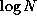

Directory Contents
This benchmark implements the heapifying operation to convert an
arbitrary binary tree structure into a binary heap in which the value
at each node satisfies the heap property - each node's value is
greater than the values of both children nodes. Heapifying consists of
comparing the element at the current node with the elements of its
children, determining if the heap property is violated, and swapping
the appropriate elements if so.
This algorithm makes a number of swaps proportional to the number of
nodes in the tree, N. The hardware version converts the tree to a
heap in a number of clock cycles that is proportional to
. Each node of the tree is implemented as a module that
can read the contents of its left and right children, compare its own
element to these two values, and update its own as well as one of its
children's elements.
The tree will satisfy the heap property after  passes.
Parallelism is exploited in allowing all nodes at one level to be
active simultaneously.